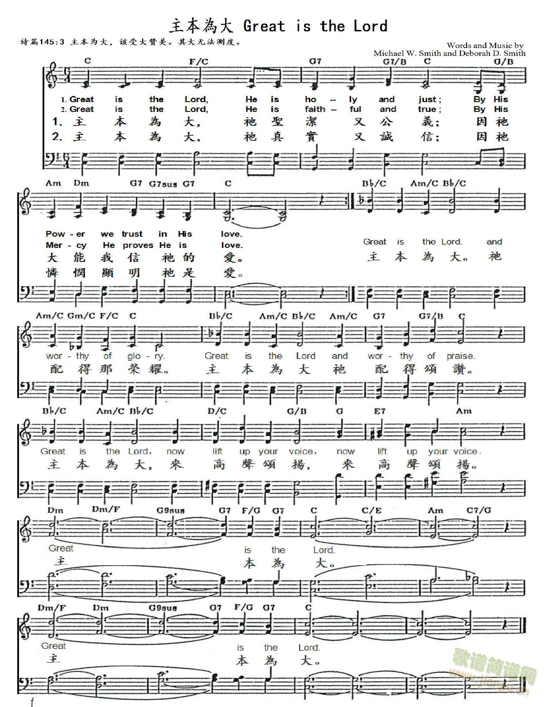

(請點耳機收聽)
(請點耳機收聽)箭經磨而亮銳，卵石經海浪衝擊而光滑，信徒經磨練而成神的器皿。
這首詩歌是史邁可夫婦（Michael W. Smith, 1957 - ,Deborah D. Smith, 1958 - ）的合作的詩歌之一。史邁可集作曲家、演奏家與歌手於一身。
1630 Great Is the Lord _Michael W. Smith ● 偉大的主
| 簡介 Great Are You, Lord (Great Is the Lord) |
| Although it is not a direct paraphrase of any particular psalm, this text echoes “great is the Lord and greatly to be praised,” found in three of them (Psalm 48:1; 96:4; 145:3). Such songs of adoration lift up the heart and mind to God, asking nothing but to enjoy God’s presence. |
Great is the Lord, he is holy and just
|
伟大的主 |
|
Verse Great is the Lord, He is holy and just By His power we trust in His love Great is the Lord, He is faithful and true By His mercy He proves He is love Chorus 1 Great is the Lord and worthy of glory Great is the Lord and worthy of praise Great is the Lord, now lift up your voice Now lift up your voice Great is the Lord, Great is the Lord Chorus 2 Great are you Lord and worthy of glory Great are you Lord and worthy of praise Great are you Lord, I lift up my voice I lift up my voice Great are you Lord, Great are you Lord Coda Great are you Lord, Great are you Lord Great are you Lord |
伟大的主，祂是圣洁公义；因祂权能，我们相信祂。
Verse |
|
http://www.jianpu.cn/pu/34/344959.htm  |
|
http://www.hymncompanions.org/Jul/07/stream.php
（副歌）
偉大的主，祂是聖潔公義；
因祂權能，我們相信祂。
偉大的主，祂誠信又真實，
滿有憐憫慈悲，祂是愛。
偉大的主，祂配得那榮耀！偉大的主，來高聲讚美！
偉大的主，來高聲頌揚，來高聲頌揚，
偉大的主，偉大的主。
偉大的主，祢配得那榮耀！偉大的主，祢配得讚美！
偉大的主，我高聲頌揚，我高聲頌揚，
偉大的主，偉大的主。
(請點耳機收聽)
箭經磨而亮銳，卵石經海浪衝擊而光滑，信徒經磨練而成神的器皿。
這首詩歌是史邁可夫婦（Michael W. Smith, 1957 - ,Deborah D. Smith, 1958 -
）的合作的詩歌之一。史邁可集作曲家、演奏家與歌手於一身。

他在未組成自己樂團前，是名女歌唱家艾美葛蘭特（Amy
Grant）的舞台搭擋，除了幫她伴奏，他的許多歌曲也都成了艾美的代表歌曲。
史邁可的音樂是屬于搖滾樂，但因他有良好的古典鋼琴和聲對位的基礎，他的音樂旋律優美清晰，和聲變化多端，節奏明朗，歌曲平易近人但不單調。
他的歌聲沙啞，並非一流聲樂家，但在他高哼低吟中，能傳達歌詞中的信息，令人感受到他誠懇而真摯的生命熱力。史邁可的妻子黛碧在詩詞上有造詣。史邁可鼓勵她從事歌詞的寫作，他們合作了若干詩歌，直到孩子們誕生，使黛碧不得不輟筆。
史邁可的音樂不同於傳統的教會音樂，他的目標是要藉音樂來教育這一代的年輕人的思想，生命與生活，並且認識自己。
他常對意圖自殺的年輕人說：「你沒有問題！我的信仰來自聖經，它告訴我們在上帝的眼中，每一個人都是獨特而尊貴的，你很重要，在上帝的眼中，你太重要了。」
史邁可相信音樂可醫治人心中的創傷，正如大衛的琴聲可驅趕掃羅王心中的惡魔使他安靜而舒愉。史邁可希望他的音樂也有療傷作用，他說：「人生多苦難，奮力的掙扎有時令人意志消沉，我希望我的音樂能提醒他們：神比我們周遭的一切都偉大，能安撫他們的心靈，重新建立對主愛眷佑的信心。」他又說：「有時我創作時，自以為是在向神彈奏，而想像祂在對我頷首微笑。」
音樂評論家殷笛說：「一位藝術家至少得有信仰，對上帝的信仰，對自己藝術的信仰；因為令他學習的是信仰。
由學習使他自己在生命的楷梯上逐漸崇高地升高他的目的，那就是上帝。」
中英文聖詩集參考
英文歌名 Great
Is the Lord
歡欣讚美 140
世紀讚頌 10
By C. Michael Hawn
“Great is the Lord,” by Michael W. Smith and Deborah D. Smith;
The Faith We Sing, No. 2022
“How Majestic Is Your Name,” by Michael W. Smith;
The Faith We Sing, No. 2023
“Great is the Lord, and greatly to be praised; and his greatness is
unsearchable.”
Psalm 145:3 (KJV)
“O Lord, our Lord, how majestic is thy name in all the earth!”
Psalm 8:1a, 9 (RSV)
The Psalms have always been a fertile source of inspiration for musicians. From
monastic psalm chants and the metrical versions of the psalms by John Calvin’s
followers, to the more liberal paraphrases of Isaac Watts, singing the psalms in
some form has been important throughout Christianity. It is no wonder that
contemporary Christian artists such as Michael W. Smith (b. 1957) should turn to
the psalms as a source for texts and musical inspiration.
Mr. Smith is often considered a "crossover artist" — attaining recognition in
both sacred and secular venues. In the early 1990s, this West Virginia native
achieved the reputation of being the male counterpart to Amy Grant (b. 1960).
His crossover song and music video “Place in This World” (1990) peaked at number
6 on Billboard’s Hot 100, and “I Will Be Here for You” (1992), https://www.youtube.com/watch?v=JN-vgjs__gk,
reached number 1 on Billboard’s Adult Contemporary Chart.

The road to such recognition was not easy, however. Moving to Nashville in 1978,
Mr. Smith struggled with drugs and low self-esteem before making a faith
commitment to Christ. In 1981, he began working with the Christian band “Higher
Ground” and writing songs for Meadowgreen Music, a leading publisher of
contemporary Christian music. “How Majestic Is Your Name” achieved hit status
when Sandi Patty (b. 1956) recorded it. (See https://www.youtube.com/watch?v=K85vE3CxH2c.)
Mr. Smith received another boost in his career in 1982 when he was asked to play
keyboards in a band backing up Amy Grant. He also was composing his own songs.
According to his website:
Amy’s managers, Mike Blanton and Dan Harrell, could not find a Christian record
label that would sign Michael or a young New Yorker named Kathy Troccoli.
Believing so much in these two young talents, they started Reunion Records.
Michael made his very first record in 1983 and it was called “Michael W. Smith
Project.” Michael wrote all the music and wife Debbie wrote the lyrics. . .
Michael continued to tour with Amy, now as her opening act. (“Michael W. Smith:
Then and Now,” http://www.ccmclassic.com/artists/michael-w-smith.html)
“Great Is the Lord” was included on this, his first album.
With the name, Rocketown, derived from a youth ministry Smith founded in 1994—Rocketown—
as a “place for teens to gather in a safe, loving environment,” he started
Rocketown Records with Reunion Records’ executive Don Donahue. Author Rob Redman
noted that this was an example of a smaller label being developed under one of
the largest secular recording companies, EMI, within its Christian Music
Division. Such arrangements were common in the contemporary Christian music
industry because they assured the quality of the recording as well as the best
distribution, especially in the time before mp3 files and other online music
distribution outlets (Redman, 2002, 59). Unlike larger labels, the “dream [was]
to be part of a label where great songs were the focus, where artists, not acts,
were developed” (“Michael W. Smith: Then and Now”).
Closely related to this was the nomenclature that evolved. Was the music
produced contemporary Christian music (CCM) or contemporary worship music (CWM)?
Robb Redman, author of The Great Worship Awakening, weighs in on this
discussion:
In the early 1990s, the CCM scene was rocked by corporate buyouts of the
Christian labels Word and Sparrow. As a result, some began to wonder about the
mission of CCM and the spiritual integrity of the artists. Was CCM about
ministry or making money? In its first years, many agreed that the mission of
CCM was music for witness and evangelism. Later, people began to wonder whether
artists were serving Christ or their careers (Redman, 2002, 60).
Redman notes that the “line between message music [music directed to Christians
and non-believers] and worship music [songs addressed to God] was never clear to
begin with.” He continues to note that Michael W. Smith and Twila Paris (b.
1958) “begin concerts with worship that typically includes new worship music and
hymn arrangements, prayer, and a brief meditation on a passage of scripture”
(Redman, 2002, 60). More recently, Monique Ingalls includes both categories
under the larger heading of CPM (Christian popular music). In her discussion of
praise and worship music, she notes that many in the industry distinguish
“between music designed for testimony and concerned with the art of professional
performance [CCM] on the one hand, and music created for participatory,
congregational song [CWM] on the other.” (Ingalls, Canterbury Dictionary of
Hymnology). By either definition, the two songs under consideration seem to fall
primarily into contemporary worship music (CWM).
Michael W. Smith has a long list of awards and recognitions: he is a three-time
Grammy winner, including the best gospel performance (1984), and he has forty
GMA Dove Awards, including songwriter of the year (1986). When he set his sights
on moving toward a mainstream audience, it did not prove difficult for him. Mr.
Smith won the coveted Male Vocalist of the Year at the Dove Awards in 2003. He
has sold more than 13 million albums, including those achieving gold (14) and
platinum (5) status (“Michael W. Smith: Then and Now”).
As was the case with Amy Grant, who has often toured with Smith, becoming a
crossover artist can bring out some critics in the Christian community. But
after 22 albums, Mr. Smith is still going strong. As recently as 2015, Smith
received a Dove Award for Christmas Album of the Year.
“Great Is the Lord” (1982) by Smith and his wife Debbie, a Wheaton College
alumna and writer, and “How Majestic Is Your Name” (1981) by Smith were written
at the time the Smiths were active at Belmont Church (rooted in the Churches of
Christ tradition) on Music Row in Nashville.
“Great is the Lord draws upon Psalm 145:3, with allusions to various
attributes of God: God’s justice (Psalm 98:9), God’s omnipotence (Psalm
33:9), God’s faithfulness (Psalm 36:5), God’s truth (Isaiah 65:16), and God’s
love (John 3:16). The stanzas end with the imperative command, “Lift up your
voice!” (Isaiah 58:1).
“How Majestic Is Your Name” draws heavily from Psalm 8:1a, 9 as
translated in the Revised Standard Version. The syncopated rhythms and
abbreviated singing range draw congregational singers into the energy of the
text. Allusions to Isaiah 9:6 in the second half of the song — “Prince of
Peace, mighty God” — fill out the song.
Recalling the composition of “Great Is the Lord,” Lindsay Terry set the context
in a discussion with Deborah D. Smith:
[Debbie] and Michael used to write praise and worship choruses together during
the evening hours. Michael seemed to do his best work at night, and sometimes
the couple used a candle for light. Before writing a song, they would read the
Bible, and God would inspire their hearts with a particular passage of Scripture
. . .
During one of these late evening writing sessions, in 1982, God led Michael and
Debbie to a particular passage of Scripture that they both thought would be a
good song. Debbie wrote a few lines of the lyrics as Michael worked on the
music. The words and the musical writing of “Great Is the Lord” came together at
the same time . . . Michael thought it was something that he would like to share
with others, especially people at their church, Belmont Church in Nashville
(Terry, 2002, 25).
CCLI (Christian Copyright Licensing International) lists over 200 songs
attributed to Michael W. Smith as composer or contributor. After 35 years, the
two songs discussed here have become Christian classics in this genre. They may
no longer appear in the CCLI Top 100, but they continue to bear witness.
FOR FURTHER READING:
Ingalls, Monique M., Andrew Mall, and Anne E. Nekola. "Christian Popular Music,
USA." The Canterbury Dictionary of Hymnology. Canterbury Press, accessed
November 13, 2017, http://www.hymnology.co.uk/c/christian-popular-music,-usa.
Price, Deborah Evans. “Michael W. Smith, Christian Music Icon, Leaving Provident
for Capitol Christian,” Billboardbiz (July 18, 2013), http://www.billboard.com/biz/articles/news/2709311/michael-w-smith-christian-music-icon-leaving-provident-for-capitol.
Redman, Robb. The Great Worship Awakening: Singing a New Song in the Postmodern
Church. San Francisco: Jossey-Bass, 2002.
“Michael W. Smith: Then & Now,” ccmclassic.com, http://www.ccmclassic.com/artists/michael-w-smith.html.
Terry, Lindsay. The Sacrifice of Praise: Stories Behind the Greatest Praise and
Worship Songs of All Time. Nashville: Integrity Publishers, 2002.
C. Michael Hawn, D.M.A., F.H.S., is University Distinguished Professor Emeritus
of Church Music and Adjunct Professor and Director for the Doctor of Pastoral
Music Program at Perkins School of Theology, Southern Methodist University
https://www.godtube.com/popular-hymns/how-great-is-our-god/
GodTube Staff
The lyrics to the worship song 'How Great is Our God!' start very simply by addressing just how wonderous our God is. And what follows is a simple call to action as to how we should respond to His greatness--rejoice!
The splendor of a King, clothed in majesty
Let all the Earth rejoice
All the Earth rejoice
The song continues by sharing how very good our God is. He is the light! And His light shines so brightly that even evil cannot hide from Him.
He wraps himself in light
And darkness tries to hide
And trembles at His voice
Psalm 145:1 calls us to worship God in a similar fashion as this modern day worship song:
1 I will extol thee, my God, O king; and I will bless thy name for ever and ever.
Chronicles 16:23 shares that we should be constantly worshipping Him and singing His praises:
23 Sing to the LORD, all the earth; proclaim his salvation day after day.
24 Declare his glory among the nations, his marvelous deeds among all peoples.
25 For great is the LORD and most worthy of praise; he is to be feared above all gods.
26 For all the gods of the nations are idols, but the LORD made the heavens.
27 Splendor and majesty are before him; strength and joy are in his dwelling place.
28 Ascribe to the LORD, all you families of nations, ascribe to the LORD glory and strength.
29 Ascribe to the LORD the glory due his name; bring an offering and come before him. Worship the LORD in the splendor of hisholiness.
30 Tremble before him, all the earth! The world is firmly established; it cannot be moved.
31 Let the heavens rejoice, let the earth be glad; let them say among the nations, “The LORD reigns!”
The chorus of 'How Great Is Our God' is pure worship for our Lord, exclaiming His greatness with a call to action to join in singing His praises so that other's might come to know Him.
How great is our God, sing with me
How great is our God, and all will see
Then the song praises God the Trinity. God is our heavenly Father and protector--our Lion. He is also the son who was sent to earth to save us--the Lamb. He is also the Holy Spirit--that voice that speaks to us when we go to Him in prayer and patiently wait for His response.
The Godhead Three in One
Father Spirit Son
The Lion and the Lamb
The final sentiment of the worship song is one of such hope. "The whole world sings." What a wonderful world we would live in if the whole world knew Him!
https://en.wikipedia.org/wiki/Michael_W._Smith
|
Michael W. Smith
|
|
|---|---|

Smith in March 2019
|
|
| Background information | |
| Birth name | Michael Whitaker Smith |
| Born |
October 7, 1957 Kenova, West Virginia, U.S. |
| Origin | Nashville, Tennessee, U.S. |
| Genres | |
| Occupation(s) |
|
| Instruments | Piano, keyboards, vocals, guitar |
| Years active | 1983–present |
| Labels | |
| Associated acts | Amy Grant, Kathy Troccoli |
| Website |
michaelwsmith |
Michael Whitaker Smith (born October 7, 1957) is an American musician who has charted in both contemporary Christian and mainstream charts.[2] His biggest success in mainstream music was in 1991 when "Place in This World" hit No. 6 on the Billboard Hot 100. Over the course of his career, he has sold more than 18 million albums.[3]
Smith is a three-time Grammy Award winner, an American Music Award recipient,[4] and has earned 45 Dove Awards.[5] In 1999, ASCAP awarded him with the "Golden Note" Award for lifetime achievement in songwriting,[6] and in 2014 they honored him as the "cornerstone of Christian music" for his significant influence on the genre.[7] He also has recorded 31 No. 1 Hit songs, fourteen gold albums, and five platinum albums.[3] He has also starred in two films and published 14 books including This Is Your Time, which he worked with Christian author Gary Thomas to write.[8]
Michael Whitaker Smith was born to Paul and Barbara Smith in Kenova, West Virginia. His father was an oil refinery worker at the Ashland Oil Refinery, in nearby Catlettsburg, Kentucky. His mother was a caterer.[9] He inherited his love of baseball from his father, who had played in the minor leagues. As a child, he developed a love of music through his church. He learned piano at an early age and sang in his church choir. At the age of 10, he had "an intense spiritual experience" that led to his becoming a devout Christian. "I wore this big cross around my neck," he would recall, "It was very real to me."[10] He became involved in Bible study and found a group of older friends who shared his faith.[10]
After his older Christian friends moved away to college, Smith began to struggle with feelings of loneliness and alienation. After graduating from high school, he gravitated toward alcohol and drugs.[9] He attended Marshall University while developing his songwriting skills but dropped out after one semester. He also played with various local bands around Huntington, West Virginia. During that time, his friend Shane Keister, who worked as a session musician in Nashville, encouraged him to move to Nashville, the Country Music capital, and pursue a career in music.[10]
In 1978, Smith moved to Nashville, taking a job as a landscaper to support himself. He played with several local bands in the Nashville club scene. He also developed a problem with substance abuse.
In November 1979, Smith suffered a breakdown that led to his recommitment to Christianity. The next day he auditioned for a new contemporary Christian music (CCM) group, Higher Ground, as a keyboardist and got the job. His lead vocals were heard on much of CCM radio with the single, "I Am". It was on his first tour with Higher Ground, playing mostly in churches, that Smith was finally able to put the drugs and alcohol behind him.[10]
In 1981, while he was playing keyboards for Higher Ground,[11] Smith was signed as a writer to Meadowgreen Music, where he wrote numerous gospel hits penned for artists such as Sandi Patty, Kathy Troccoli, Bill Gaither and Amy Grant, to the effect that some of these popular worship songs can now be found in church hymnals. The following year, Smith began touring as a keyboardist for Grant on her Age to Age tour.
He would eventually become Grant's opening act and recorded his first Grammy-nominated solo album The Michael W. Smith Project (which he also produced himself) in 1983 on the Reunion Records label. This album contained the first recording of his hit "Friends", which he co-wrote with his wife Deborah. By the time Smith's second album Michael W. Smith 2 was released in 1984, he was headlining his own tours. In 1986, Smith released The Big Picture.
After the release of his 1988 effort, i 2 (EYE), Smith once again collaborated with Grant for her "Lead Me On" world tour. The following year, Smith recorded his first Christmas album, simply titled Christmas (1989).
In 1990, Smith released Go West Young Man, his first mainstream effort, which included the mainstream crossover hit single "Place in This World". The song peaked at No. 6 on the Billboard Hot 100. In 1992, he released Change Your World, which included the No. 1 adult contemporary hit "I Will Be Here for You". In 1993 Smith released his first box set, The Wonder Years and his first greatest hits album, The First Decade (1983–1993). The latter also includes two new songs, "Do You Dream of Me?" and "Kentucky Rose".
In 1994, Smith appeared as a guest pianist on the album Swing, Swang, Swung by Christian rock band Guardian.[12]
In 1995, Smith released his eighth album I'll Lead You Home, which combines the pop style of his secular albums with a touch of religious feel. Live the Life (1998) and This Is Your Time (1999) follow the same style. In 1998, Smith also released his second Christmas album, Christmastime.
Smith collaborated with Jim Brickman on "Love of My Life", a romantic love song for Brickman's album Destiny in 1999. The song went to chart at No. 9 on the Hot Adult Contemporary Tracks. Also in 1999, he became the first Christian artist to receive the ASCAP "Golden Note" Award for lifetime achievement in songwriting.[6][13]
Nearly all of Smith's albums include at least one instrumental track, and in 2000, Smith recorded his first all instrumental album, Freedom. The following year, Smith released his first all-worship music album, Worship, on September 11. This album was followed by a sequel, Worship Again in 2002. Both albums were recorded live in concert. Worship Again also includes a song that Smith wrote called "There She Stands", inspired by the September 11, 2001 attacks. He performed this song live for the 2004 Republican National Convention,[14] saying that President George W. Bush, who he said is a fan and a family friend, had asked him to write a song about the attacks.[15]
In 2002, Smith released a live concert DVD titled Worship, filmed live in Edmonton, Alberta at YC Alberta. The concert includes songs from both Worship (2001) and Worship Again (2002). It immediately topped the Billboard video charts and went gold in both the U.S. and Canada.
Smith won the Male Vocalist of the Year award at the GMA Music Awards in 2003.[16] The same year he also released his second greatest hits album, The Second Decade (1993–2003), which includes a new single called "Signs".
Smith's album, Healing Rain, was released in 2004 and debuted at No. 11 on the Billboard Hot 200 Chart. The title track rose to No. 1 on the Radio & Records Charts and a music video for the song was released. The album combines the pop style of his previous recordings with the religious feel of his two live worship albums. It was also nominated for a Grammy Award for Best Pop/Contemporary Gospel Album. In 2006 he released Stand, which is similar to Healing Rain (2004) in style and genre but with more Christian-themed songs. Also in 2006, Smith did the score and soundtrack to the film The Second Chance, which he also starred in. He also released a single from the soundtrack album, "All in the Serve".
In October 2007, he released his third Christmas album, It's a Wonderful Christmas. On June 20, 2008, Smith recorded his third live Worship album at the Lakewood Church in Houston, Texas, titled A New Hallelujah. It was released in October 2008. That same month he began a tour with Steven Curtis Chapman. In September 2010, he released Wonder,[17] which follows the CCM style of Healing Rain (2004) and Stand (2006).
Smith's second instrumental album, Glory, was released on November 22, 2011. Unlike his first instrumental album, Freedom (2000), this album features a 65-piece orchestra at AIR Studios Lyndhurts Hall in London and Wildwood Recording Studio in Nashville.[18] The following year he released his third compilation album, Decades of Worship (2012).
Smith's concert in Draper, Utah, on July 24, 2012 was almost canceled due to a complaint filed by a Utah resident on July 16, 2012. He claimed that a show "conflated with prayer and worship" should remain in church or private property, not in the "public's backyard". The following day the city council decided to cancel the concert, but a day later they decided to host the show as planned after all, following a criticism from a Utah evangelical group that equated cancelling the concert to an assault on religious liberty.[19] The Mayor of Draper and several city council members were present at the event and were recognized for their support.
In 2014, Smith released three albums, Hymns, Sovereign, and The Spirit of Christmas. Hymns is Smith's first effort at doing his own rendition of traditional hymns, and it was released exclusively at Cracker Barrel Old Country Store on March 24, 2014.[20] The album sold 12,000 copies in its first week of release and debuted at No. 24 on the US Billboard 200.[21] It was also the best-selling Christian music album for the week of April 19, 2014,[22] and won a 2014 Dove Award for "Inspirational Album of the Year".[23] Sovereign, released on May 13, 2014, is his first studio worship album and his first album released through Capitol Records,[24] after leaving his long-time label Reunion Records in 2013.[1] The album sold almost 16,000 copies in its first week,[25] and debuted at No. 10 on the Billboard 200, making it the highest-charting album in his career as of 2014.[25] The Spirit of Christmas, officially released as Michael W. Smith & Friends: The Spirit of Christmas, is Smith's first duet album. Released on September 30, 2014, it features duets with Carrie Underwood, Lady Antebellum, Little Big Town, Jennifer Nettles, Martina McBride, Vince Gill, Bono, Amy Grant, and Michael McDonald.[26][27] The album marks Smith's third new album in 2014 to enter the Billboard 200,[28] peaking at No. 16 as of December 2014.[29] It also won a 2015 Dove Award for "Christmas Album of the Year".
Smith, along with Amy Grant, was honored as the "cornerstone of Christian music" by ASCAP in 2014 for his significant influence on the genre.[7] In 2015, Smith and his son Tyler wrote the score and soundtrack for the film 90 Minutes in Heaven, which he also has a small acting role in.
In November 2015, Smith and Amy Grant started their annual Christmas tour again after a roughly 15-year break.[30]
Smith's second hymns album, called Hymns II - Shine on Us, was released on January 29, 2016.[31] Like his first hymns album released in 2014, the album was sold exclusively at Cracker Barrel Old Country Store.
On June 21, 2016, Smith released a new single titled "He Will Never End" which was originally released in March 2016 as a bonus track on the Target exclusive edition of The Passion: New Orleans soundtrack CD (2016).[32] On June 27, 2016, he released the music video for the single which was filmed entirely in Israel in April 2016.[33]
Later in 2016, Smith released a Christmas musical project in a collaboration with Wes King, Bradley Knight, and Luke Gambill called Almost There – A Christmas Musical.[34] The musical is named after a song Smith wrote a few years ago for his Christmas album The Spirit of Christmas (2014).[35]
On August 11, 2017, Smith released a new single, "A Million Lights", which marks a departure from his previous sound.[36] It is the lead single and title track from his pop album released on February 16, 2018.[37] A week after, on February 23, 2018, Smith released another album called Surrounded which is his first live worship album in ten years.[38] The two albums became his 30th and 31st top 10 entries in Billboard's Top Christian Albums chart, the most among solo artists in the span of his career.[39]
In May 2018, Smith launched a new children's book series, Nurturing Steps, which he created with VeggieTales co-creator Mike Nawrocki. The first book, Nighty Night and Good Night, was released May 8. He also released his first children's album, Lullaby, to accompany the book.[40]
On August 30, 2018, Smith hosted a free event at Nashville's Bridgestone Arena called "Surrounded: A Night to Pray, Worship and Be Awakened". The event will be broadcast on TBN later this year in 175 countries worldwide.[41]
On February 22, 2019, Smith released Awaken: The Surrounded Experience, a live worship album.[42]
In 1994, Smith made his acting debut as Billy Holden in Secret Adventures: "Shrug". In 2006, Smith was the lead actor in The Second Chance, a film directed by Steve Taylor. He also did some of the score and soundtrack for this film.
In 2015, Smith starred as Cliff McArdle in the film adaptation of the best-selling book 90 Minutes in Heaven by Don Piper.[43] In addition, he collaborated with his son on the score and soundtrack for this film.
Smith also starred as James the disciple in The Passion, a live musical film that was aired on FOX on March 20, 2016.[44]
In 1994, Smith opened a teen club, named Rocketown, in Nashville, Tennessee (6th Avenue). Later in early 2003, the club was moved to a new location—a renovated warehouse in downtown Nashville. The venue offers a large dance floor, extensive indoor skate park, and a café hosting live acoustic music.
In 1996, Smith opened his own record label, Rocketown Records. The label was named after a song on his third album The Big Picture. The first artist signed was Chris Rice, who had written "Go Light Your World", a No. 1 hit song by Kathy Troccoli, in 1995. Smith didn't record under the label himself until 2018.
Smith is actively involved in volunteer service and is vice chair of the President's Council on Service and Civic Participation, which is chaired by Jean Case of the Case Foundation. He is also an avid spokesperson for sponsoring children through Compassion International.[45]
Smith was active in Billy Graham Crusades as well as Samaritan's Purse.[46] Smith sang "Just As I Am" in a tribute to Graham at the 44th GMA Dove Awards.[47] He also sang it at the memorial service honoring Graham at the United States Capitol rotunda on February 28, 2018.[48][49]
Smith is married to Deborah "Debbie" Kay Davis (b. 1958) and has five children: Ryan, Whitney Katherine Mooring (married to Jack Mooring of the band Leeland), Tyler Michael (keyboard player for the United Tour), Anna Elizabeth, and Emily Allison. He resides in the Nashville suburbs and spends time at his farm. Smith attended Belmont Church in Nashville, Tennessee and is mentored by its long-time pastor, Don Finto.[50] Smith is also the founding pastor of New River Fellowship church in Franklin, Tennessee, where he was the lead pastor from 2006 to 2008. Smith and his wife remain involved members of the church.
Smith was a personal friend of former President George H. W. Bush and is a friend of his son, former President George W. Bush.[51][52] Smith was invited to play at the 2004 Republican National Convention[53] singing "There She Stands",[citation needed] as well as the state funeral of George H. W. Bush at the National Cathedral in Washington, DC, on December 5, 2018, singing "Friends".[54]
Smith is also friends with U2 singer Bono and they have collaborated on a Christmas album[55] as well as One Campaign.[56]
Alderson-Broaddus College awarded Smith the degree Doctorate of Music honoris causa in 1992.[57][58]
Smith was also named one of People magazine's "Most Beautiful People" in 1992.[59]
In 2018, he performed at Billy Graham's memorial and funeral.[60][61]
In June 2019, Smith signed a declaration by Franklin Graham, that called for a special day of prayer for President Donald Trump, that God would protect, strengthen, embolden, and direct him.[62]